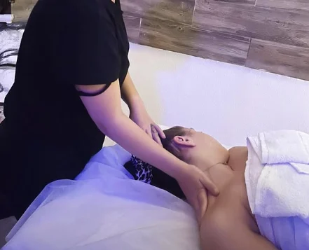
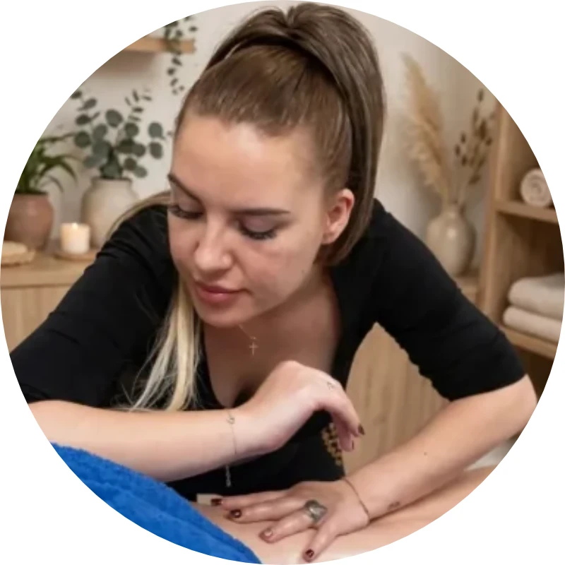

PCA Massaggi Olistici · Trani
Il benessere inizia quando ti dedichi del tempo.
Massaggi olistici, rituali di relax ed esperienze personalizzate per ritrovare il piacere di fermarti, ascoltarti e prenderti cura di te.
Un'esperienza di benessere nel cuore di Trani.

Chi siamo
Un sogno diventato un luogo di benessere.
Sono Popa Alexandra Cătălina, fondatrice di PCA Massaggi Olistici.
Ho aperto il mio centro a soli 24 anni, trasformando un obiettivo personale in un progetto costruito con impegno, determinazione e passione.
Desideravo creare uno spazio in cui le persone potessero concedersi una pausa dalla frenesia quotidiana, sentirsi accolte e dedicare del tempo al proprio benessere.
È così che è nato PCA: un ambiente pensato per offrire massaggi olistici, esperienze di relax e trattamenti personalizzati, in un'atmosfera di tranquillità e rispetto.
Nel mio percorso ho scelto di valorizzare l'ascolto, la cura dei dettagli e la qualità dell'esperienza. Il centro si avvale inoltre della collaborazione di altri professionisti per alcune proposte di trattamento.
Per me, ogni appuntamento è prima di tutto un momento dedicato alla persona.
“Il benessere è anche scegliere di fermarsi e concedersi attenzione.”
Alexandra
A chi ci rivolgiamo
Ogni persona ha il suo modo di ritrovare equilibrio.
-
A chi desidera rallentare
Per chi sente il bisogno di allontanarsi per un momento dalla routine e concedersi una pausa dedicata al relax.
-
A chi cerca un trattamento personalizzato
Per chi desidera scegliere un'esperienza di massaggio tenendo conto delle proprie preferenze e delle proprie esigenze di benessere.
-
A chi vuole condividere un momento speciale
Per chi desidera vivere un'esperienza di relax in coppia o regalare del tempo di qualità a una persona cara.
Approccio
Il benessere è fatto di attenzione, ascolto e piccoli gesti.
Crediamo che prendersi cura di sé significhi anche trovare uno spazio nel quale rallentare, sentirsi a proprio agio e vivere il momento presente.
-
Ascolto
Ogni esperienza inizia dal dialogo, per comprendere preferenze, aspettative ed eventuali esigenze da considerare.
-
Personalizzazione
Tecniche e proposte diverse, per individuare il trattamento più coerente con ciò che desideri.
-
Atmosfera
Luci soffuse, un ambiente curato in ogni dettaglio e piccoli gesti sensoriali che rendono l'esperienza piacevole.
-
Rispetto
Riservatezza, attenzione e rispetto della persona sono parte integrante dell'accoglienza.
Servizi
Ogni trattamento, un momento da dedicare a te.
Scopri le nostre proposte e lasciati accompagnare nella scelta dell'esperienza più adatta alle tue preferenze.
-

Massaggi Olistici Corpo e Viso
Manualità dedicate al corpo e al viso, scelte insieme in base alle tue preferenze: massaggio svedese, decontratturante, bioenergetico, sportivo, linfodrenante e anticellulite, ayurvedico, al bamboo e con coppettazione.
-

Massaggi di Coppia
Un'esperienza da condividere: due lettini nello stesso ambiente riservato, per concedersi insieme un momento di tranquillità e benessere, ciascuno con il proprio trattamento.
-

Massaggi a 4 Mani
Un trattamento eseguito contemporaneamente da due operatori, con movimenti coordinati e sincronizzati, per un'esperienza particolarmente avvolgente e profonda.
-

Trattamenti Viso, Ciglia e Sopracciglia
Proposte dedicate alla cura del viso e dello sguardo: dermopigmentazione delle sopracciglia, laminazione di ciglia e sopracciglia e trattamenti viso con Gua Sha, per valorizzare i lineamenti con naturalezza.
Come funziona
Quattro semplici passi per dedicarti del tempo.
-
Contattaci
Scrivici per ricevere informazioni sui trattamenti e sulle disponibilità.
-
Scegliamo l'esperienza
Ti aiutiamo a orientarti tra le diverse proposte, tenendo conto delle tue preferenze.
-
Fissiamo l'appuntamento
Concordiamo insieme il giorno e l'orario più comodi per te.
-
Concediti il tuo momento
Ti aspettiamo presso il centro, in un ambiente dedicato al relax e all'accoglienza.
Dove siamo
Un angolo di tranquillità a Trani.
FAQ
Tutto quello che vuoi sapere prima di prenotare.
Propongo diverse tipologie di massaggio. Puoi scrivermi per conoscere le caratteristiche di ogni trattamento e chiarire ogni dubbio prima di prenotare: ti aiuterò volentieri a scegliere l'esperienza più adatta alle tue preferenze.
Nel massaggio di coppia accolgo due persone che ricevono contemporaneamente un trattamento, ciascuna sul proprio lettino. Nel massaggio a quattro mani, invece, due operatori lavorano in sincronia sulla stessa persona.
Sì, ricevo solo su appuntamento. Ti consiglio di contattarmi in anticipo per conoscere le disponibilità.
Puoi scrivermi su WhatsApp al numero +39 392 664 9905 oppure compilare il modulo contatti qui sotto: ti risponderò il prima possibile.
Prima del trattamento ti chiederò di comunicarmi eventuali condizioni di salute, gravidanza, lesioni o altre circostanze rilevanti. In caso di dubbi sulla sicurezza del massaggio, ti consiglio di chiedere un parere al tuo medico.
Contatti